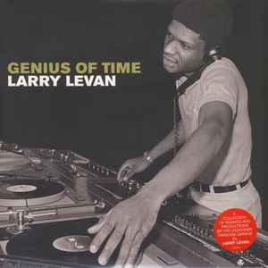

Главным героем зарождающегося жанра стал диджей Фрэнки Наклз. Работая в легендарном клубе «Warehouse» (что переводится как «Склад», отсюда и пошло название «House»), он экспериментировал со звуком. Чтобы танцпол не останавливался ни на минуту, Наклз микшировал треки диско, евродиско и новой волны, добавляя к ним драм-машины и свои басовые линии. Так родился тот самый грув, который позже назовут хаусом.